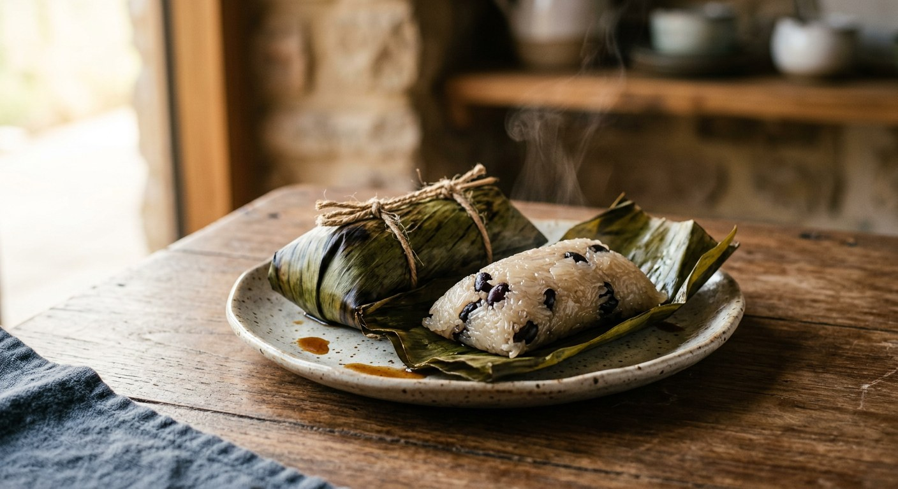

Glutinous rice fried in sweet-salty coconut cream until each grain turns glossy, wrapped around a banana and a scatter of black beans, tied in banana leaf and steamed — the market snack that travels in bundles.

The name is a recipe in three words: ข้าว (rice), ต้ม (boiled), มัด (tied). But the word conceals the real work, which Thai sources agree on instantly: the rice is not simply boiled — it is ผัด, fried in sweet-salty coconut cream until the grains drink the cream and shine. Pim, writing one of the clearest home versions, gives the dish a second, more honest name: ข้าวต้มผัด, boiled-then-fried rice.
The balance is the craft. Pim warns the uncooked coconut cream should taste salt first, then a wallop of sweet — the sugar dulls as it cooks, so the syrup is deliberately over-salted and over-sweetened before the rice ever meets it. The rice is stirred in one direction only: Kapook's cook is firm that rough stirring snaps the grains, and a snapped grain is a broken parcel.
Then comes the fold. Two banana leaves, shiny sides together, black beans scattered, a spoon of rice, half a ripe กล้วยน้ำว้า banana laid along it, another spoon of rice to bury it — then the leaves folded into a neat bundle and tied twice with bamboo string. Pantip's vendor, who shared her recipe so others could earn from it, steams hers for two hours and then insists on the step every market seller knows: lift the parcels out and air them, or the steam soaks the rice and ruins the chew. She washes her rice in alum water first, the old seller's trick that keeps the rice firm and the parcel spoiling slowly.
The parcels sit stacked at every morning market, sold in twos and threes, tied in pairs like a weight-lifter's dumbbells. No plates, no spoons — you peel a leaf and eat it standing up.
| Thai | English | Amount |
|---|---|---|
| ข้าวเหนียว | Glutinous (sticky) rice, soaked | 500 g |
| หัวกะทิ | Coconut cream | 400 g |
| น้ำตาลทราย | Granulated sugar | 175 g |
| เกลือ | Salt | 9 g |
| ถั่วดำ | Black beans, soaked and boiled | 50 g |
| กล้วยน้ำว้า | Small ripe bananas (nam wa) | 6 |
| ใบเตย | Pandan leaf, tied in a knot | 1 |
| ใบตอง | Banana leaves | 2 per parcel |
| ตอก | Bamboo strips (or kitchen string) | 2 per parcel |
The market batch (Pantip): 1 kg old sticky rice, 1 kg coconut cream, 350 g sugar, a heaped spoon of salt, 3 tbsp oil (so the rice will not cling to the cream), a comb of fairly ripe bananas, half a kilo of black beans soaked overnight, a handful of pandan — rice washed in alum water for firmness, steamed two hours and aired. The old charcoal pot (Wongnai): fresh coconuts squeezed by hand for หัวกะทิ and หางกะทิ, the cream fried until its oil splits, banana leaves sun-dried for fifteen minutes so they will not tear, parcels steamed over charcoal. The fillings beyond banana (Kapook, Pim): mashed taro, or a bean or shrimp filling in the banana's place.
Boil or steam. TrueID boils the tied parcels in water for an hour and a half, standing upright. Kapook steams for one hour forty-five to two hours, Pantip for two — and Wongnai steams over charcoal for the smell of it. Both roads work; the parcel only needs the rice cooked through without soaking.
When the sugar goes in. Pim dissolves the sugar into the coconut cream from the start. Kapook and TrueID hold it back until the rice has absorbed the cream, then stir it through as the grains glaze. Pantip adds oil before the sugar, so the sweetened rice will not cling to the pan. Three orders, one result — but the timing changes how the syrup caramelises into the grains.
The beans. Black beans in the parcel are standard in Kapook, Pim, TrueID and Pantip. Wongnai's old-fashioned pot skips them entirely — rice, banana, coconut and sugar alone. Where they do appear, they are soaked overnight and boiled soft first, never raw.
Firmness tricks. Pantip washes her rice in alum water — the market-seller's trick for rice that stays firm and parcels that keep. Kapook steams longer instead and warns only against rough stirring. Pim chooses old-crop rice for the same firmness the alum chases.
The savoury cousin. For pork in the parcel, the source to follow is the Isaan farm recipe for ข้าวต้มไส้หมู (khao tom sai mu, also called ข้าวต้มญวน): raw sticky rice layered with thin slices of pork seasoned with shallot, pepper and salt, steamed soybeans between the layers, boiled four hours. Same leaf, same tie, a completely different parcel — and its beans are soybeans, not the black beans of the sweet version.
This recipe is translated from the following Thai-language sources. Where they disagree, we've said so.
1. Kapook Cooking — "ข้าวต้มมัด สูตรขนมไทยหวานมันอร่อยมัดใจ" (the recipe and wrapping method used here, from Rin's Cookbook) — cooking.kapook.com
2. TrueID Food — "สอนทำ ข้าวต้มมัด สูตรโบราณ ข้าวเหนียวนุ่มพิเศษ" (the boiled-not-steamed method) — food.trueid.net
3. Pantip — "สูตรทำข้าวต้มมัด" topic 39115844 (the market-seller's batch: alum wash, oil, two-hour steam, airing) — pantip.com
4. Pim.in.th — "ข้าวต้มมัด (หรือข้าวต้มผัด)" (the fried-rice explanation and the salt-first, sweet-after balance) — pim.in.th
5. Wongnai — "ข้าวต้มมัดโบราณ" by กินไม่อ้วน (the charcoal-steamer version with hand-squeezed coconut cream) — wongnai.com
6. Rakbankerd — "วิธีทำข้าวต้มไส้หมูหรือข้าวต้มญวน" (the savoury pork parcel, ข้าวต้มญวน) — rakbankerd.com